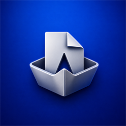
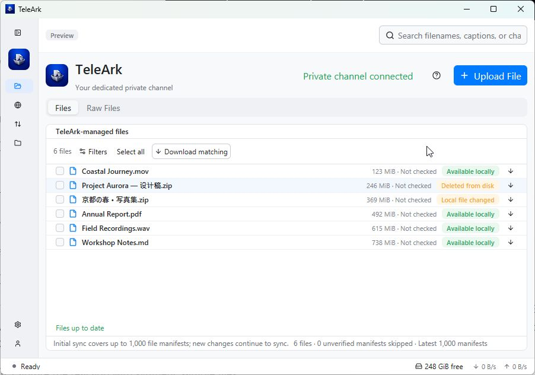

Find your files
Browse channel files, search your local catalog, and narrow results by file type or date.

TeleArkNative desktop. Open source.
Find what you need, follow every transfer, and keep encrypted files in your own private channel. Meet TeleArk.

Less searching. More doing.
From a channel full of documents to your encrypted archive, keep the details organized and the next action within reach.
Browse channel files, search your local catalog, and narrow results by file type or date.
Encrypt files on your desktop and store them in a dedicated private Telegram channel that you own.
Select a few files or download matching files in a batch. Works with ordinary and TeleArk-managed channels.
Follow sync phases, transfer charts, queues and retries. Managed-channel sync runs alongside normal channels.
Export your encryption key for safekeeping and import it on another device to open your encrypted files.
Light and dark themes, keyboard shortcuts, configurable folders, proxy settings and nine interface languages.
Make room for your files.
Windows through Microsoft Store. Linux and macOS directly from GitHub.
Windows 10 (1809+) & Windows 11
x64
Install and receive updates through the official Store listing.
AppImage, Debian package or archive
Ubuntu 22.04 baseline
For AppImage, make the downloaded file executable, then run it:
chmod +x {{linux_appimage_name}}
./{{linux_appimage_name}}On Debian or Ubuntu, install the package with:
sudo apt install ./{{linux_deb_name}}The portable archive includes an AppRun launcher if AppImage is unsuitable for your system.
macOS 11 or later
Apple Silicon & Intel
These releases are not Apple-notarized. Prefer compiling yourself? Follow the local build guide.
GitHub downloads: {{release_tag}} · SHA256 checksums · All releases & release notes
A space of your own.
Sign in from the app to browse your channels and their files.
Use a dedicated private channel for TeleArk-managed encrypted files. Export your key and keep it safe.
Files are encrypted locally. Restored content is authenticated and verified before the final local file is published.
Built by you, on your Mac.
Build a native executable for your Mac with Rust and Apple's free Command Line Tools. Cargo uses your Mac's architecture automatically.
Published packages use the project's self-signed identity. They do not have Apple Developer ID signing or notarization; the installer is unsigned.
If macOS blocks a downloaded release, follow Apple's instructions for opening a trusted app after verifying its source and checksum.
Full developer setupInstall Rust with rustup, then install Apple's Command Line Tools:
xcode-select --installOpen Terminal and clone TeleArk. This checks out the release shown above:
git clone https://github.com/peppermintish/teleark.git
cd teleark
git switch --detach {{release_tag}}The first build downloads dependencies and can take several minutes.
cargo build --release -p teleark-gui --bin teleark --locked
./target/release/telearkA source build without distribution credentials asks for your own API ID and hash in the app. Get them from Telegram's application panel. Keep these values private.
This runs the local executable; creating a distributable signed installer has separate packaging requirements.
A few useful details.
TeleArk-managed file content is encrypted locally using AES-256-GCM. Telegram can still see channel membership, object sizes and timing. The local catalog is not encrypted. Ordinary channel files retain their original format. Read the security model for the exact boundaries.
Your Telegram account and channel access cannot replace your encryption key. Keep the exported key somewhere safe so you can restore encrypted files on another device.
Files shows each complete logical file once. Raw Files shows the underlying Telegram documents, encrypted parts and manifests used to store it.
Open a GitHub issue with your platform, app version and steps to reproduce. Remove credentials, keys, session data and private filenames from anything you share.